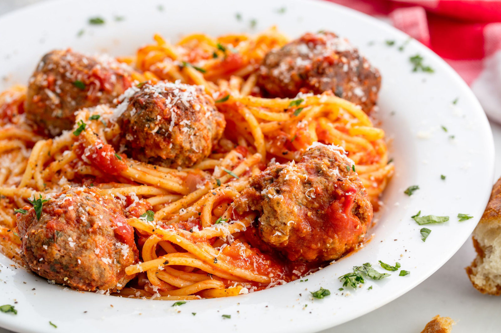

Spaghetti and Meatballs

Description
This recipe is a simple yet delicious rendition of Spaghetti and Meatballs. It's perfect for both small and large events
Ingredients
- 1 Large Egg
- 3 Tbsp. fresh basil
- 3 Tbsp. finely chopped fresh parsley
- 1 tsp. dried oregano
- 1/4 tsp. salt
- 1/4 tsp. ground black pepper
- 2 cloves garlic
- 1/4th cup water
- 1 1/2 lb. meatloaf mix
- 3/4 cup italin style bread crumbs
- 1/2 cup parmigiano reggiano cheese
- 32 oz. marinara sauce
- 1 lb. spaghetti
Recipe
- In a large bowl, combine the egg, basil, parsley, oregano, salt, pepper, garlic and water; whisk well
- Add the meat, breadcrumbs, and parmigiano reggiano
- Mix with your hands until just combined
- Roll the mixture into golf ball-sized meatballs, and place on an ungreased baking sheet
- Bake for about 10 minutes, then remove the baking sheet from the oven and use a metal spatula or tongs to turn the meatballs
- Put the meatballs back in the oven and cook for another 10 minutes, until they are nicely browned and almost cooked through
- At the same time, bring the marinara sauce to a simmer in a large skillet. Taste it and adjust the seasoning if necessary. Transfer the browned meatballs to the marinara sauce, leaving the fat behind. Cover loosely with a lid or foil and simmer for about 10 minutes, until the flavors marry and the meatballs are cooked through. Keep warm until ready to toss with pasta.
- While the meatballs are cooking, bring a large pot of well-salted water to a boil
- Add the spaghetti and cook until al dente. Drain, then toss with the sauce and meatballs
- Transfer the spaghetti and meatballs to serving bowls and top with fresh chopped basil and more grated cheese.